An analysis of the opening moves of the highest-ranked chess players
The Sicilian Defence is the best offense
python
EDA
SQL
Published
April 20, 2022
Executive Summary
Original creation and submission for this notebook was last May 29, 2019.
This jupyter notebook was created for my Data Mining and Wrangling class for my Masters in Data Science program in the Asian Institute of Management. In particular, this was done during the 2nd semester for a class - Data Mining and Wrangling - as one of the core requirements. In this report, we shall do an analysis on opening chess moves through exploratory data analysis. In this exercise, we extracted the data from ChessGames.com using the modules Beautifulsoup, requests, and re Python modules, then stored the data in an sqlite database. Results show that the Sicilian, Najdorf (ECO = B90) opening was used in nearly 2.6% of the total games won by the top players. However, looking at the individual players, there is no predominant opening move, with only 7 of the 30 players having the Sicilian, Najdorf move as their top winning opening move.
Acknowledgements
This analysis was done together with my Lab partner, George Esleta. I would like to thank Prof Christian Alis and the ACCeSS Laboratory for the access to the high-performance computing facility.
A. Introduction and the Problem Statement
Chess is a two player strategy game played on a checked 8 by 8 board. The 8 by 8 grid consists of 64 squares where each player is located at opposite ends of the checked board. At the beginning of the game, each player assigned a color of either Black or White. The color scheme indicates which player will move first, with the player with the white pieces moving first. Moves are alternating between players, with each player allowed to only move one chess piece each round.
Each player is given six unique types of pieces with varying numbers, with each unique piece moving differently across the board. Pieces may move to squares occupied by another chess piece. If the player moves into a square occupied by an opponent’s piece, then the opponent’s piece is captured and taken off the chessboard. The purpose of the game is to capture the opponent’s king, signaling a checkmate. Each game is then concluded with either of three scenarios: “1–0” means White won, “0–1” means Black won, and “½–½” indicates a draw (also known as a stalemate).
The first moves in any chess game, also known as a player’s opening move, are the most crucial as it sets the tone, foundation and area of control of the players. The rationale behind this rests on the assumption that the first few moves will influence a player’s probability of winning. The objectives of the opening moves allow each player needs to gain dominance of the grid by: (1) getting most of their pieces out of their default positions as this allows more possible moves), and (2) getting control of the centre of the board (as this allows better dominance).
With the assumption the player’s opening moves may play influential role to the player’s grid control and outcome, the paper will explore the top ranked players opening moves. The purpose of this paper is to determine if there is a specific opening move that each of the top-ranking players use.
B. Methodology
Pre-requisites: Load Requirement Package
Before anything else, let us first load all important modules for this exercise.
Loading required modules
# These are the standard importsimport pandas as pdimport numpy as npimport matplotlib.pyplot as pltimport plotly.plotly as pyimport plotly.graph_objs as gofrom plotly.offline import iplot, init_notebook_mode# Using plotly + cufflinks in offline modeimport cufflinkscufflinks.go_offline(connected=True)init_notebook_mode(connected=True)%matplotlib inline# This is to allow a code fold in jupyter notebookfrom IPython.display import HTMLHTML('''<script> function code_toggle() { if (code_shown){ $('div.input').hide('500'); $('#toggleButton').val('Show Code') } else { $('div.input').show('500'); $('#toggleButton').val('Hide Code') } code_shown = !code_shown } $( document ).ready(function(){ code_shown=false; $('div.input').hide() });</script><form action="javascript:code_toggle()"><input type="submit" id="toggleButton" value="Show Code"></form>''')
Additionally, we should create a sqlite3 database for where we will store the data what we will scrape. For that, we shall use the sqlite3 python module.
Import the SQLite3 moule then create an empty database called chessgames.
Next, since we will be doing some web scraping, which may want to set our proxy and headers. A proxy server can help a scraper avoid IP address blocking, access geographically restricted content, facilitate high-volume scraping, and avoid detection. Headers in web scraping are a part of the HTTP request that provides information about the client making the request. They are important because they can affect the response received from the server. Some websites may block or restrict access to content based on the header information. To avoid being detected as a bot or being blocked by the server, it is important to ensure that the headers used in web scraping are appropriate and mimic those of a real user.
Edit our Proxy and Heading
# Setting of proxyos.environ['HTTP_PROXY'] ='http://13.115.147.132:8080'os.environ['HTTPS_PROXY'] ='http://13.115.147.132:8080'# Setting of headerheader = {'''accept: text/html,application/xhtml+xml,application/xml;q=0.9, image/webp,image/apng,*/*;q=0.8,application/signed-exchange;v=b3 accept-Encoding: gzip, deflate accept-Language: en-US,en;q=0.9 cache-Control: max-age=0 connection: keep-alive host: www.chessgames.com referer: http://www.chessgames.com/perl/chess.pl?page=16&pid=14125 &playercomp=either&year=2010&yearcomp=ge upgrade-Insecure-Requests: 1 user-Agent: Mozilla/5.0 (X11; Linux x86_64) AppleWebKit/537.36 (KHTML, like Gecko) Chrome/74.0.3729.169 Safari/537.36'''}
Step 1: Understand the Data and Conduct Web Scraping Tool
To analyze the top opening moves of the highest-rated chess players, web data extraction was performed on the pages of ChessGames.com. We focused on two entities, namely the chess players (players) and their games (games). Data for both entities were saved to an SQLlite database (chessgames.db).
The get_player_info method was used to scrape the player information (seen below).
Function description for get_player_info()
def get_player_info(url):''' Scrapes player info from the specified URL. Parameter --------- URL : URL of player page Return ------ list of tuples (pid, lname, fname, rating, start_year, end_year, game_count) ''' players_list = [] resp = requests.get(url, headers=headers) time.sleep(1)print("\tStatus code: ", resp.status_code) resp_soup = BeautifulSoup(resp.text, 'lxml') players = resp_soup.select('tr[bgcolor="#FFFFFF"],tr[bgcolor="#FFEEDD"]')for player in players: data = player.select('td') rating = data[0].text.strip() name = data[2].text.split(',')iflen(name) ==2: fname = name[1].strip()else: fname =None lname = name[0].strip() years = data[3].text.strip() game_count = data[4].text.strip() start_year = re.match('(\d{4})?-?(\d{4})', years).group(1) end_year = re.match('(\d{4})?-?(\d{4})', years).group(2) url =str(player.select('a')[-1]) pid = re.match('.*?pid=(\d+)', url).group(1) tup = (pid, lname, fname, rating, start_year, end_year, game_count)print('\t', tup) players_list.append(tup)return players_list
For the get_player_info function, the Requests module is a Python library used for making HTTP requests. We can use basic methods such as the GET, POST, PUT, DELETE, and others. The module also provides support for handling cookies, adding custom headers, and handling redirects. We also used the BeautifulSoup Python library, which is a typical package in parsing HTML and XML documents. The package parses the pased HTML source code into a parsed tree, which can be easily traversed. Finally, we used the re Python package to utilize Regular Expression for easier string matching.
Next, the players data are then inserted to the players table using the insert_players method:
Function description for insert_players()
def insert_players(conn):''' Inserts players into the players table Parameter --------- conn : sqlite connection ''' cur = conn.cursor()for char in string.ascii_uppercase: url ="http://www.chessgames.com/directory/"+ char +".html"print(url) players = get_player_info(url) cur.executemany('''INSERT INTO players VALUES (?, ?, ?, ?, ?, ?, ?);''', players) conn.commit()
Here, we access the enter the created database, then Insert the players and associated metadata into the database.
Next, this study will focus on the games of the thirty (30) highest-rated players. The ranking was based on the rating provided by the website. To extract the games of these players, we first obtained their player IDs (pid) by using the pandas method read_sql. Here we can pass a SQL statement:
Method to query the database
df_players = pd.read_sql("""SELECT pid, fname || ' ' || lname, rating, game_count FROM players WHERE rating != '' ORDER BY rating DESC""", conn)df_players.columns = ['Player ID', 'Name', 'Rating', 'Number of Games']df_players.head(30)
Table 2: Top 30 chess players based on Rating
Player ID
Name
Rating
Number of Games
52948
Magnus CARLSEN
2882
3,016
15940
Garry KASPAROV
2851
2,385
76172
Fabiano CARUANA
2844
1,891
17316
Levon ARONIAN
2830
2,708
95915
Wesley SO
2822
1,400
56798
Maxime VACHIER-LAGRAVE
2819
2,369
12088
Viswanathan ANAND
2817
3,542
12295
Vladimir KRAMNIK
2817
3,026
12089
Veselin TOPALOV
2816
2,278
50065
Shakhriyar MAMEDYAROV
2814
2,254
10084
Hikaru NAKAMURA
2814
2,424
17279
Alexander GRISCHUK
2797
2,586
52629
Ding LIREN
2797
920
107252
Anish GIRI
2793
1,522
49796
Teimour RADJABOV
2793
1,746
54535
Sergey KARJAKIN
2788
2,399
11719
Alexander MOROZEVICH
2788
1,847
12183
Vassily IVANCHUK
2787
3,752
19233
Robert James FISCHER
2785
1,052
20719
Anatoly KARPOV
2780
3,609
13847
Boris GELFAND
2777
3,014
79968
Peter SVIDLER
2769
2,786
49080
Leinier Dominguez PEREZ
2768
1,342
12109
Ruslan PONOMARIOV
2768
1,989
54683
Ian NEPOMNIACHTCHI
2767
1,614
49246
Pentala HARIKRISHNA
2766
1,442
49456
Pavel ELJANOV
2765
1,409
15874
Gata KAMSKY
2763
1,889
12290
Peter LEKO
2763
2,364
112240
Yu YANGYI
2762
991
The games table was then populated by web scraping http://www.chessgames.com/perl/chessplayer?pid=<pid> and iterating over the top 30 player IDs. The following fields were extracted for each game:
Table 3: games table fields
Field
Description
Data Type
gid
Game ID
integer
white_pid
White Player ID
int
black_pid
Black Player ID
int
result
Result
varchar
moves
Number of moves
integer
year
Year
integer
tournament
Tournament Name
varchar
eco
Encyclopaedia of Chess Openings
varchar
opening_move
Opening move
varchar
The get_players_games function was implemented to scrape the game data for a given Player ID pid and page number page_start. This writes the games data of the player to a CSV file (<pid>.csv):
Function description for the get_players_games()
def get_player_games(pid, page_start):""" Web scrapes the games list for a player and writes it to a CSV Parameters: ----------- pid : player ID page_start : starting page Returns: -------- None """ url ='http://www.chessgames.com/perl/chessplayer?pid='+str(pid) resp = requests.get(url, headers=headers)print('pid = ', pid, '\turl = ', url, '\tcode = ', resp.status_code) time.sleep(np.random.randint(1, 2)) soup = BeautifulSoup(resp.text, 'lxml') div_page_count = soup.select('td[background$="/chessimages/table_stripes.gif"]') page_count =int(re.findall('of (\d+)\;', div_page_count[0].text)[0])withopen(f'{pid}.csv', 'a') asfile: csv_writer = csv.writer(file, delimiter=',', quotechar='"')for page inrange(page_start, page_count+1): page_url ='http://www.chessgames.com/perl/chess.pl?page='+\str(page) +'&pid='+str(pid) page_resp = requests.get(page_url, headers=headers)print('\tpage = ', page, '\turl = ', page_url,'\tcode = ', page_resp.status_code) time.sleep(np.random.randint(1, 2)) page_soup = BeautifulSoup(page_resp.text, 'lxml') games = page_soup.select('tr[bgcolor="#FFFFFF"],tr[bgcolor="#EEDDCC"]')for game in games: data = game.select('td') game_url = data[0].find("a")['href'] game_id = re.findall('(\d+)', game_url)[0] result = data[2].text.strip() moves = data[3].text.strip() year = data[4].text.strip() tournament = data[5].text.strip() eco = data[6].select('a')[0].text.strip() opening_move = re.findall('^[A-E0-9][0-9]{2} (.*)', data[6].text.strip())[0] game_resp = requests.get('http://www.chessgames.com'+ game_url, headers=headers) time.sleep(np.random.randint(1, 2)) game_soup = BeautifulSoup(game_resp.text, 'lxml') players = game_soup.select('center')[0].select('a')try: white_id = re.findall('(\d+)', players[0]['href'])[0]except: white_id =Nonetry: black_id = re.findall('(\d+)', players[1]['href'])[0]except: black_id =None tup = (game_id, white_id, black_id, result, moves, year, tournament, eco, opening_move)try: csv_writer.writerow(tup)except:print('\t\tgameID: ', game_id, '\tWrite to CSV failed')
All player csv files were then inserted to the games table of the chessgames.db database using the read_csvs function:
Function description for read_csvs()
def read_csvs(conn):""" Read all player csvs and save them to the games table """ gid_failed = [] cur = conn.cursor()for file_name in glob.glob('./games/*.csv'):withopen(file_name) asfile:print(file_name) reader = csv.reader(file, delimiter =',')for line in reader:try: cur.execute('''INSERT INTO games VALUES (?, ?, ?, ?, ?, ?, ?, ?, ?);''', line)print('\t\tgameID: ', line[0], '\tInsert success!')exceptExceptionas e: gid_failed.append(line[0])print('\t\tgameID: ', line[0], '\tInsert Failed!\t', e)return gid_failed
Now, let us examine the games dataframe by calling it with the read_sql Pandas module.
Accessing the database.
df_games = pd.read_sql("""SELECT * FROM games""", conn)df_games.columns = (['Game ID', 'White Player ID', 'Black Player ID','Result', 'Number of Moves', 'Year', 'Tournament', 'ECO','Opening Move'])
Below you can see that Table 4 and Table 5 shows the summary statistics for the players and games table. 8,574 players and 50,087 games were inserted into the chessgames database.
Table 4: players table summary statistics
Statistic
Rating
count
8574.000000
mean
2361.279566
std
184.344627
min
1379.000000
25%
2268.000000
50%
2389.000000
75%
2479.000000
max
2882.000000
Table 5: games table summary statistics
Statistic
Number of Moves
Year
count
50087.000000
50087.000000
mean
42.893485
2005.074950
std
17.288031
11.643902
min
0.000000
1953.000000
25%
31.000000
2000.000000
50%
41.000000
2008.000000
75%
52.000000
2014.000000
max
255.000000
2019.000000
Results
Figure 1 below shows the top 10 opening moves used by the thirty highest-ranked chess players. 356 games, or nearly 2.6% of the games won by the top players, were opened using the Sicilian, Najdorf (ECO = B90) move.
However, looking at the top opening moves per player as seen in Figure 3, the Sicilian, Najdorf (ECO = B90) move does not appear as the top move for most of the players. For instance, Magnus Carlsen, the highest-ranked player, has the Ruy Lopez, Berlin Defense as his top opening move. As shown in Table 7, Only 7 of the top 30 players have the Sicilian, Najdorf move as their top winning opening move. Also, if we look at the top 5 highest-rated players, 3 of 5 of them have the Ruy Lopez, Berlin Defense move as the top winning move.
Function to see top 10 opening moves and % won.
df_top_moves = pd.read_sql("""SELECT g.white_pid, p.fname || ' ' || p.lname, p.rating, g.eco, g.opening_move, count(*) FROM games g INNER JOIN players p on g.white_pid = p.pid WHERE g.white_pid IN (SELECT pid FROM players WHERE rating != '' ORDER BY rating DESC limit 30) AND g.result = '1-0' GROUP BY g.white_pid, g.eco, g.opening_move ORDER BY p.rating DESC, count(*) DESC""", conn)df_top_moves.columns = ['PID', 'Name', 'Rating','ECO', 'Top Opening Move', 'Number of Games Won']df_top_moves = df_top_moves.groupby(['ECO', 'Top Opening Move'])['Number of Games Won'].sum().to_frame()df_top_moves = df_top_moves.sort_values('Number of Games Won', ascending=False)df_top_moves.reset_index(inplace=True)df_top_moves['% of Games Won'] = ( df_top_moves['Number of Games Won'] / df_top_moves['Number of Games Won'].sum() *100)df_top_moves.head(10)
Table 6: Top Opening Moves of the 30 highest-rated players
ECO
Top Opening Move
Number of Games Won
% of Games Won
B90
Sicilian, Najdorf
356
2.566321
A07
King’s Indian Attack
250
1.802191
B12
Caro-Kann Defense
227
1.63639
C78
Ruy Lopez
206
1.485006
C42
Petrov Defense
205
1.477797
C11
French
204
1.470588
E15
Queen’s Indian
203
1.463379
A04
Reti Opening
192
1.384083
D37
Queen’s Gambit Declined
186
1.34083
C65
Ruy Lopez, Berlin Defense
176
1.268743
Code to generate the Top Opening Moves.
import matplotlib.pyplot as pltfig, ax = plt.subplots(dpi=150)df_top_moves[10::-1].plot.barh('Top Opening Move','% of Games Won', ax=ax, color='#BF5209', legend=False)ax.set_xlabel('% of Games Won')
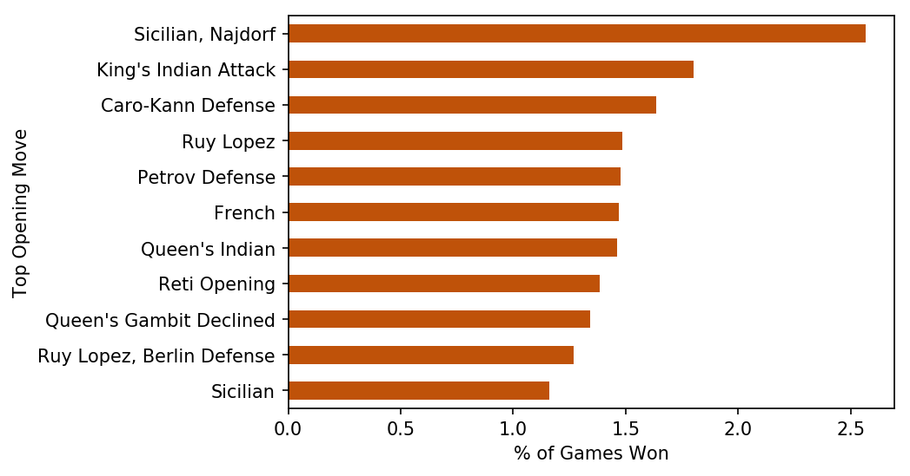
FIGURE 1:Top Opening Moves of the 30 highest-rated chess players
Now, let us view the top opening moves per top player (top 10 players)
Code to generate the Top Opening Moves for top players
df_top_moves = pd.read_sql("""SELECT g.white_pid, p.fname || ' ' || p.lname, p.rating, g.eco, g.opening_move, count(*) FROM games g INNER JOIN players p on g.white_pid = p.pid WHERE g.white_pid IN (SELECT pid FROM players WHERE rating != '' ORDER BY rating DESC limit 30) AND g.result = '1-0' GROUP BY g.white_pid, g.eco ORDER BY p.rating DESC, count(*) DESC""", conn)df_top_moves.columns = ['PID', 'Name', 'Rating', 'ECO', 'Top Opening Move', 'Number of Games Won']df_top_moves = (df_top_moves .groupby(['Rating', 'PID', 'Name', 'ECO', 'Top Opening Move']) ['Number of Games Won'].sum().to_frame())df_top_moves = (df_top_moves.reset_index() .sort_values(['Rating', 'Number of Games Won'], ascending=[False, False]) .set_index(['PID', 'Rating', 'Name', 'ECO', 'Top Opening Move']))df_top_moves = df_top_moves.groupby(level=0).head(10)df_top_moves.reset_index(inplace=True)df_top_movesnames = df_top_moves['Name'].unique()for name in names: fig, ax = plt.subplots() df = df_top_moves[df_top_moves['Name'] == name] df[10::-1].plot.barh('Top Opening Move', 'Number of Games Won', ax=ax, color='#BF5209', legend=False) ax.set_title(name) ax.set_xlabel('Number of Games Won')
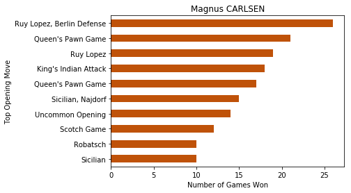 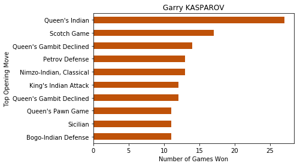
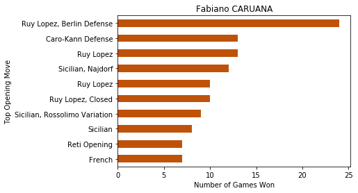 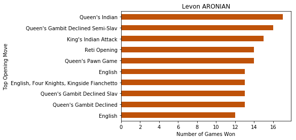
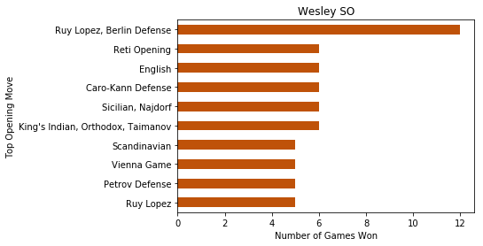 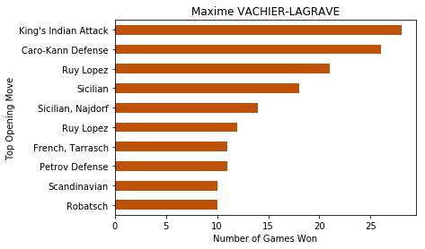
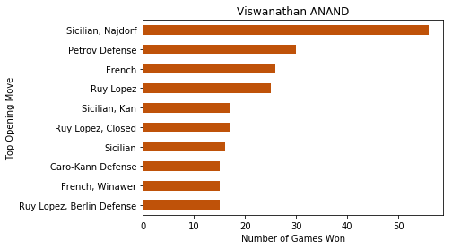 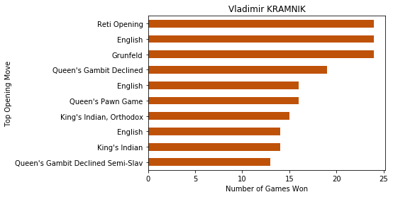
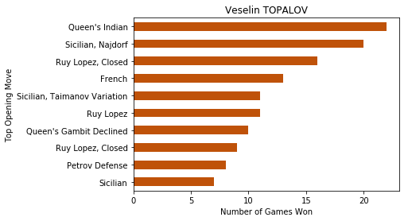 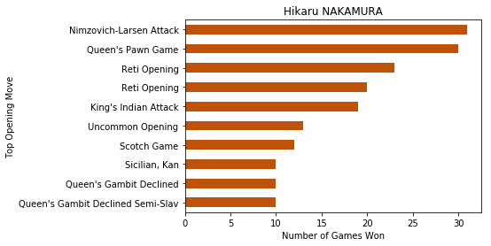
Figure 1: Top Winning Moves Per Top Player
Conclusions and Recommendations
The results indicate that the Sicilian, Najdorf is the most used opening move by the thirty top-ranked players, with 356 games or nearly 2.6% of the games were won using this move. However, looking at the individual opening moves of each top-ranked players, there is no predominant opening move, with only 7 of the 30 players have the Sicilian, Najdorf move as their top winning opening move. Additionally, looking at the top five players, the Ruy Lopez, Berlin Defense was the most frequent opening move.
The methodology of the study does not take into account the total number of games each player competed in. Certain top ranked players have higher number of competition appearances. This may affect the number of instances the Sicilian, Najdorf may appear due to playing style bias. Further research may be conducted to explore normalizing the data by the number of games each top-player appeared in and won. Also, we can explore why the top-ranked players have a preference towards the Ruy Lopez, Berlin Defense.